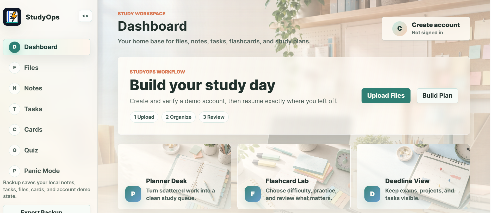

JavaScript · Study planning
StudyOps
A browser study workspace for turning scattered course material into notes, review tools, deadlines, and a plan for what to tackle next.
HTML · CSS · JavaScript · Browser storage
- Add your material
- Plan your tasks
- Review with flashcards

Notes and study materials
Import text files, save course notes, and track tasks alongside flashcards and deadlines. The dashboard pulls them into a study queue.
Review tools
Notes and text imports feed local summaries, flashcards, quizzes, and deadline extraction. These tools use local text-processing rules. PDF, image, and Word contents are not extracted.
Panic Mode
Choose an exam, quiz, assignment, or presentation preset to make a timed study plan. Tasks include priorities, due dates, and time estimates.
Storage and backups
Data stays in the current browser. Export a JSON backup to keep a copy or move it to another browser. The account screens run locally and do not send email or provide cloud accounts.